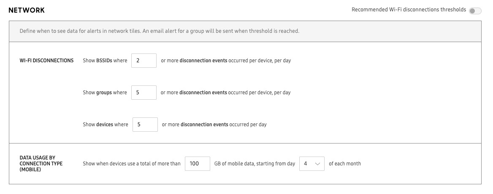
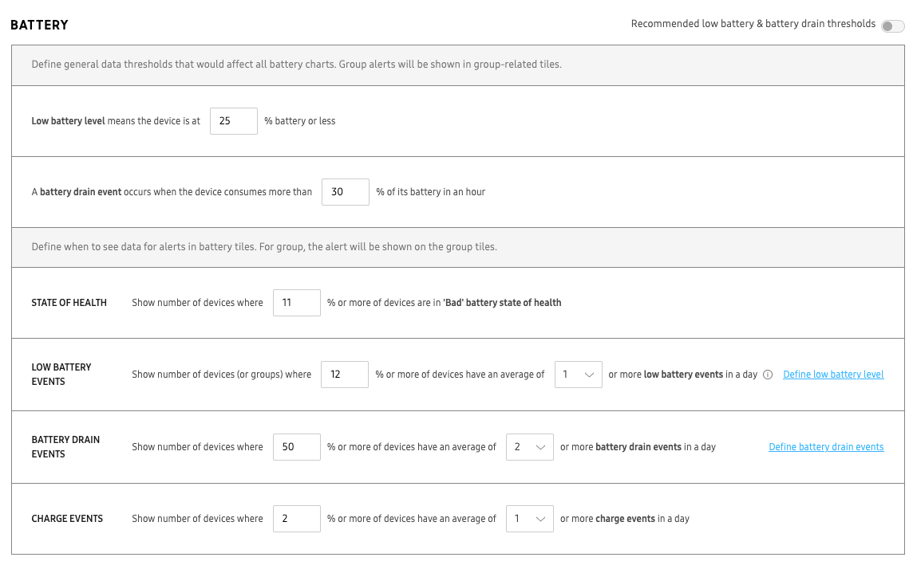
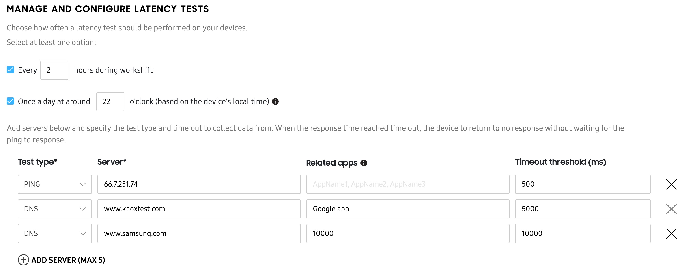
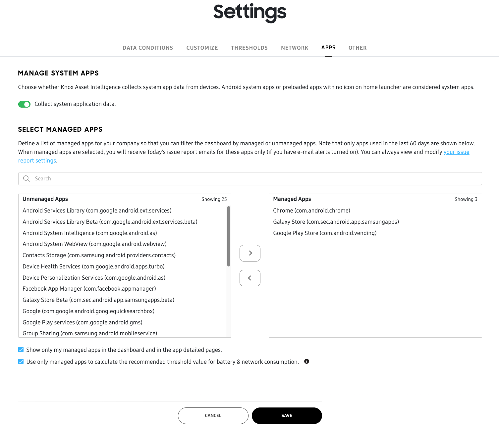

Configure dashboard settings
Last updated September 25th, 2024
After your devices get added to the Knox Asset Intelligence console and are enrolled in the service, you can begin using the Dashboard to view business insights related to your fleet’s app, battery, and network usage without any additional setup.
However, if you want to customize your Dashboard layout, define thresholds in order to receive alerts, or configure work shifts, then you’ll need to configure your Dashboard Settings. To do this, click Settings near the top-right corner of the Dashboard. The Dashboard settings page is divided into the following tabs:
Depending on your admin permissions, you may not be able to modify certain dashboard settings. Please ensure your admin account has the proper permissions.
Data Conditions
The Data conditions tab lets you to define when and how data gets collected, and the type of data that gets collected by the Knox Asset Intelligence service. This tab consists of the following sections:
- Work shift data collection
- Data upload
Work shift data collection

By default, Knox Asset Intelligence collects data at all times (if data is available). However, if you want to only collect data at certain times or under certain conditions, then you can enable the Work shift configuration option. Once enabled, data will only be collected under one of these conditions:
- During a specific time window on certain days.
- When devices connect to an allowed Wi-Fi access point.
- When managed app activity is detected.
For example, if you only want to collect work-related data from 9-5 PM on weekdays, you can set Work shift configuration to do so accordingly. By default, the work shift setting is turned off, and the devices collect data throughout the day. A shift end is detected when a device hasn’t reported activity from a managed app or connected to an allowlisted access point for longer than two hours.
You can manage the Wi-Fi SSID allowlist and managed app list by clicking the corresponding links, and specify individual managed apps that will trigger a work shift.
Data upload
The Data upload section lets you specify what type of data gets collected, and — for some insights — how often data gets collected. The following table describes the data upload options available. Select a data upload option checkbox in each category to let Knox Asset Intelligence collect that specific type of data from your devices. To disable data collection for an entire category altogether, toggle the category option off.
Network
| Options | Description |
|---|---|
| Wi-Fi disconnection/connection data for allowlisted SSIDs |
Collects data about when your devices connect or disconnect from Wi-Fi networks. Affected dashboard insights:
For BSSIDs and APs, you can specify whether disconnection data is collected for all SSIDs, or only whitelisted SSIDs. See Manage SSID allowlist to learn more. |
| Mobile/Wi-Fi data usage |
Collects Mobile and Wi-Fi network usage data. Network usage data is collected at all times (regardless of shift configuration), and uploaded once a day. Affected dashboard insights:
|
| Network latency results for specified test servers |
Collects network latency data for your devices that connect to specific servers. You can specify up to five latency test servers in the NETWORK tab. See Manage and configure latency tests to learn more. Affected dashboard insights:
|
| Wi-Fi calling setting status |
Collects data to let you know if users have the Wi-Fi calling feature enabled or disabled on their devices, or if the feature is unsupported. Enabling this option also populates the Wi-Fi calling field in the device details panel Affected dashboard insight:
Wi-Fi calling might not be supported by all carriers, even if the feature is enabled on the device. |
| Mobile signal strength with location |
Collects a device's real-time mobile signal strength data and displays this information on the Location dashboard. Affected dashboard insight:
For this feature to work, you must also enable Location tracking in the DATA UPLOAD tab. |
App
| Options | Description |
|---|---|
| Run time: Foreground/background run time, battery usage |
Collects data related to the amount of time (in hours) an app was used, and the average battery consumption for each app. Affected dashboard insights:
|
| Screen time: Screen time, times launched |
Collects data related to the amount of time an app is running in the foreground. Affected dashboard insight:
Screen time data is collected regardless of the device’s battery or charging status. |
| Network usage: Wi-Fi/mobile usage |
Tracks the amount of mobile and Wi-Fi network data used by all apps across your device fleet. Affected dashboard insight:
|
| Issues: ANR, FC, and abnormal events every # hour |
Collects data for when apps report either an App Not Responding (ANR), Forced Closed (FC), or general Abnormal issue. You must specify how often the system collects app issue data by entering a value between 1 hour and 24 hours in the provided field. Affected dashboard insight:
|
| RAM usage (Labs) |
Collects data related to how much RAM your apps consume. This data will be used to create new dashboard insights in a future Knox Asset Intelligence release. |
| CPU usage (Labs) |
Collects data related to how much CPU resources your apps consume. This data will be used to create new dashboard insights in a future Knox Asset Intelligence release. |
Battery
There are no individual data upload options for battery data. Toggle the Battery category to enable or disable battery data upload altogether.
System
| Options | Description |
|---|---|
| Storage usage |
Collects data related to the total and available remaining storage of each device. Affected dashboard insight:
|
| RAM usage (Labs) |
Collect data related to how much RAM your devices consume. This data will be used to create new dashboard insights in a future Knox Asset Intelligence release. |
| CPU usage (Labs) |
Collect data related to how much CPU resources your devices consume. This data will be used to create new dashboard insights in a future Knox Asset Intelligence release. |
Location tracking
| Options | Description |
|---|---|
| Outdoor GPS every # hour # min |
Collects a device's real-time location (Outdoor GPS) data. You must specify how often the system collects GPS data by entering a value greater than 1 minute and less than 24 hours in the provided fields. Affected dashboard insight:
|
Customize
If you prefer to focus on certain data insights, you can define which tiles appear on your dashboard. Select or clear one or more insights and save your changes to remove the corresponding tiles from your dashboard without impacting reported data.

To enable Battery level at shift start and Battery level at shift end, you must first define the conditions for a work shift on the DATA CONDITIONS tab.
Thresholds
On the THRESHOLDS tab, you can set the conditions for when certain dashboard insights trigger alerts. This tab is broken down into the following sections:
- Today’s issues
- Network
- Apps
- Battery
Today’s issues

Drag the sliders to adjust the yellow and red thresholds, which represent the percentage of impacted devices required before an alert is sent.
Take, for example, a case where you’re managing a group of 100 devices. The yellow alert threshold for Abnormal app events is set to 15% and the red threshold is set to 25%. You would receive an email alert when 16 devices report an abnormal app event, and another when 26 devices report an event.
TODAY’S ISSUES also supports device groups. Admins can set a minimum number of devices for a group to trigger an email alert. Doing so ensures you only receive relevant alerts for the devices you’re managing.
Under the sliders, enter a minimum number of devices for a group. Any device groups below the specified minimum size are ignored in threshold event calculations.
Knox Asset Intelligence also allows you to manage the types of report data you receive. There are two ways to manage your report preferences:
- Through the Reporting menu in Manage services & preferences
- By clicking EMAIL PREFERENCES in the bottom-right corner of TODAY’S ISSUES
Choosing either option takes you to a menu where you can select whether to receive reports for app-related issues, Wi-Fi-related issues, battery-related issues, or all of them. If you’ve configured a list of managed apps, only managed app issues are reported by default.
Network

Wi-Fi Disconnections
You may want to track whether a certain number of Wi-Fi disconnection events are occurring, based on the following conditions:
- BSSIDs (basic service set identifiers) with a certain number of disconnection events, per day
- Devices with a certain number of disconnection events, per day
- Groups that contain devices with a certain number of disconnection events, per day
Enter a number of events as a threshold for each category. This number must exceed 1. Once the detected number of disconnection events exceeds the threshold, an email alert is triggered.
In the top-right corner of the NETWORK section, enable Recommended Wi-Fi disconnection thresholds to have the service intelligently define Wi-Fi disconnection event thresholds based on an internal statistical model. This option is only available once Knox Asset Intelligence has collected enough network data from your devices. If you enable the recommended values and save your changes, the existing threshold values are overridden for all admins in your tenant.
Data usage by connection type (mobile)
To set this alert threshold, set a data usage value in GB, then a day of the month for which the alert will be triggered.
For example, you can set an alert to show when your entire fleet uses more than 100 GB of mobile data since the 4th of each month.
- If your current day is the 5th of the month, you’ll see an alert if your fleet consumed more than 100 GB of mobile data since the 4th of this month.
- If your current day is the 3rd of the month, you’ll see an alert if your fleet consumed more than 100 GB of mobile data since the 4th of last month.
- If your curent date is the 4th of the month, you will not see an alert since the data has not passed yet.
App
To identify apps that are consuming abnormally large amounts of battery or network data, you can set threshold percentages for both battery consumption and network usage. These thresholds are measured per day and per device. If an app exceeds one of the thresholds, the device records it as an event and the data is displayed as an insight in the relevant dashboard charts.
If a small number of your devices are reporting high app usage statistics that aren’t representative of the whole device fleet, you can also enter a minimum device count to ignore app data from those devices.
In the top-right corner of the APP section, enable Recommended app thresholds to have the service intelligently define app battery and network consumption event thresholds based on an internal statistical model.
If you’ve added Managed Applications in Settings > MANAGED APPS, you’ll see a checkbox indicating that only managed apps are used by default when calculating recommended app battery and network consumption. To calculate recommended thresholds based on all apps in your organization, clear the checkbox.
Battery
In the THRESHOLDS > BATTERY section, you can define the conditions that determine when data gets reported, and when alerts get triggered.

You can configure two categories of battery thresholds:
- General data thresholds that affect all battery insights
- Alert thresholds that affect the battery tiles on the Dashboard
General data thresholds
| Option | Description |
|---|---|
| Low battery level | Specify the battery level percentage that would produce any low battery related data. For example, setting 25% means a device would only report low battery related data if its battery level drops to 25% or lower. |
| Battery drain event | Specify the total battery percentage that — if the device consumes in one hour or less — would produce a battery drain event. For example, setting 10% means a device would report a battery drain event if its battery drops 10% in an under an hour. |
Alert thresholds
| Option | Description |
|---|---|
| State of health | Specify the percentage of devices in your fleet that must report a Bad battery state of health before an alert is triggered on the Battery state of health dashboard tile. For example, 10 means that at least 10% of all devices must report a Bad battery state of health before the alert is sent. |
| Low battery events | Specify the percentage of devices in your fleet that must report an average of at least 1, 2, or more than 2 low battery events in a day before an alert is triggered on either the Low battery events, Groups with low battery events, or Groups with low battery devices at shift start dashboard tiles. |
| Battery drain events | Specify the percentage of devices in your fleet that must report at least 1, 2, or more than 2 battery drain events in a day before an alert is triggered on the Battery drain events dashboard tile. |
| Charge events | Specify the percentage of devices in your fleet that must report at least 1, 2, or more than 2 battery charge events in a day before an alert is triggered on the Charge events dashboard tile. |
Recommended thresholds
In the top-right corner of the BATTERY section, enable Recommended low battery & battery drain thresholds to have the system intelligently define battery event thresholds based on an internal statistical model.
This option is only available once Knox Asset Intelligence has collected enough battery data from your devices. If you enable the recommended thresholds option, the existing threshold values are overridden for all admins in your tenant.
Network
The NETWORK tab lets you manage your SSID allowlist and latency test servers.

Manage SSID allowlist
Select whether you want to capture data for all SSIDs or only for certain SSIDs.
If you choose to capture data only for allowlisted SSIDs, enter an SSID in the provided field. Click ADD SSID to add more, up to a maximum of 10. When you’re finished, click SAVE.
Make sure your SSID names don’t contain spaces, otherwise you may experience data collection issues.
Your Wi-Fi connectivity events are then captured based on the option you selected.
Manage and configure latency tests
If your enterprise has self-hosted servers, you can use Knox Asset Intelligence to actively monitor your device fleet’s network connectivity performance. By performing a latency test on your corporate server, you can troubleshoot whether network connectivity issues might be caused by the client, the server, or intermediate network infrastructure problems.

To perform a latency test, you’ll first need to define a test time. Select at least one of the following options:
| Option | Use case |
|---|---|
| During a work shift | If you set up a work shift for your devices, you can configure the latency tests to run at specific intervals during the workshift (for example, every two hours). Select this option and specify the work shift time interval. |
| Once a day | If you want to perform a single latency test at a specific time of day (based on the device’s local time), select this option and enter the time in 24-hour format. |
If you are using a work shift, you can also select Once a day. The latency test will run regardless of the work shift period.
Once you’ve selected a test period, you’ll need to add your server information. You can add up to five test servers. For each test server, you can select one of the following three types of latency tests:
| Test type | Input |
|---|---|
| Ping | Enter either an IP address or a domain name. For example, 0.0.0.0 or example.com. |
| DNS | Enter a domain name, such as example.com. |
| TCP | Enter a URL that leads to a content page. For example, https://www.example.com/about. |
In the Related apps field, you can manually enter one or more easy-to-remember app names to associate with the managed server.
For example, if you have a managed server with IP address 105.260.209.81, you can give it related app names like Knox Capture and Knox Authentication Manager to help you easily associate the IP address with the type of apps that reach that server.
If you want to set a time limit for each latency test, you can define a Timeout threshold, in milliseconds, for each server. If a device performs a latency test and doesn’t receive a response within the threshold, a Failed event is recorded. You can view all the total count of failed events in the Network latency response time insight’s expanded view.
Apps
The Apps tab in Dashboard settings lets you configure how you manage app data.

Only apps used within the last 60 days are available for categorization.
In the MANAGED SYSTEM APPS field, you can use the Collect system application data slider to collect system app (Android system apps, or pre-loaded apps with no icons on the home launcher) data from your devices.
In the SELECT MANAGED APPS field, you can categorize apps as unmanaged or managed, letting you easily filter out unwanted insights from the dashboard.
Only apps used within the last 60 days are available for categorization.
Use the search bar to search for an app or package name, or select apps in either list to move. You can move apps back and forth between the two lists using the arrow buttons in the middle.
If you only want to see data from managed apps on the console, add one or more apps to the Managed Apps list, then select Show only my managed apps in the dashboard.
If you wish to calculate recommended battery or network consumption threshold values using only your managed apps, add one or more apps to the Managed Apps list, then select Use only managed apps to calculate the recommended threshold value. If you wish to use ALL apps to calculate recommended thresholds for battery and network consumption (instead of just managed apps), simply clear the checkbox.
On this page
Is this page helpful?